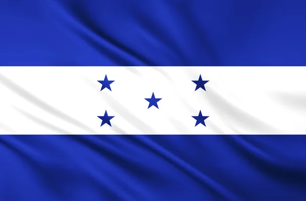
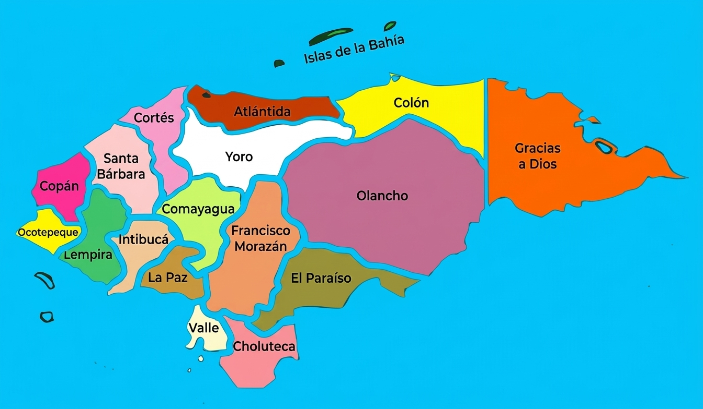
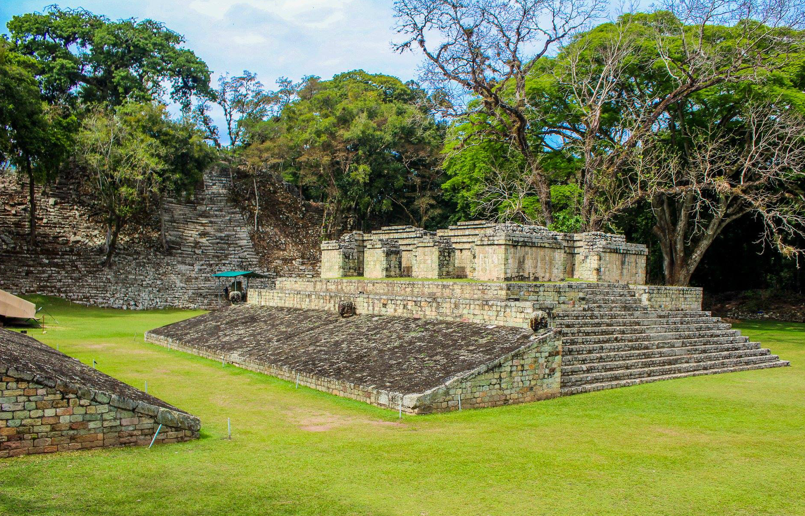
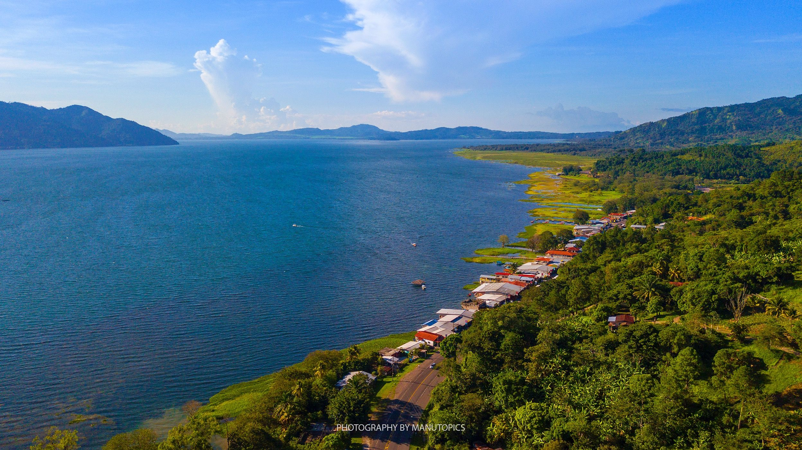
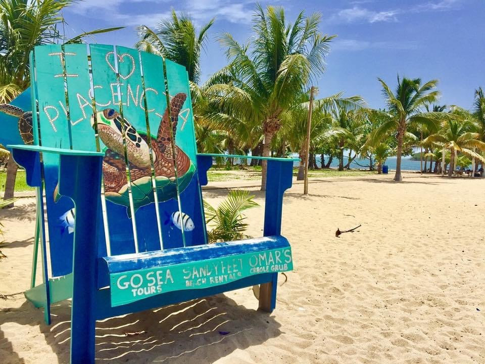
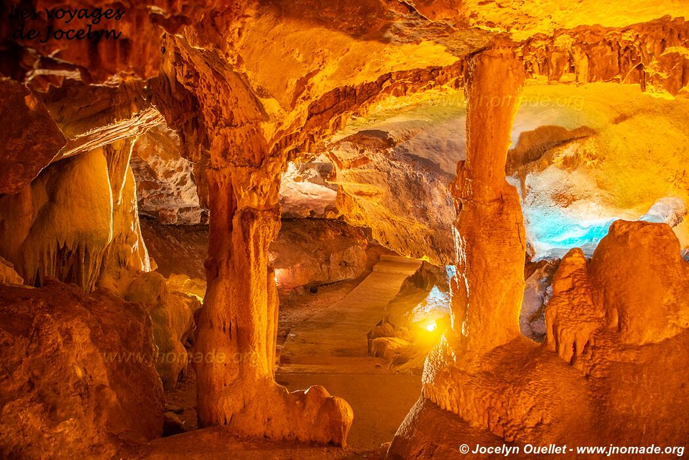

Bandera Nacional
Representa la identidad, la unidad y la soberanía de Honduras. Sus cinco estrellas simbolizan los países de Centroamérica.
Un país, 18 departamentos, infinitas experiencias.
Descubre la diversidad de nuestra tierra, desde sus playas cristalinas hasta sus montañas, su gente y su rica cultura.
Selecciona una zona del mapa para conocer sus atractivos, historia y lugares que hacen especial a cada rincón de Honduras.

Descubre paisajes, sitios históricos y destinos inolvidables de Honduras.






Emblemas nacionales y símbolos que representan la identidad hondureña.

Representa la identidad, la unidad y la soberanía de Honduras. Sus cinco estrellas simbolizan los países de Centroamérica.

Representa la historia, la riqueza natural y los recursos del territorio hondureño.

Es el canto patriótico que expresa la historia, el amor y el respeto por Honduras.

Representa la belleza y la riqueza de la fauna hondureña.

Simboliza la fauna silvestre y la riqueza natural del país.

imboliza la belleza y la diversidad natural del país.

Representa la riqueza forestal y los recursos naturales de Honduras.

Representa el territorio de Honduras, sus límites geográficos y su ubicación en Centroamérica.
Emblemas nacionales y símbolos que representan la identidad hondureña.

Redactó el Acta de Independencia de Centroamérica.

Fue el primer jefe de Estado de Honduras.
Luchó por la unión de Centroamérica.

Militar y presidente de Honduras, reconocido por sus ideales de justicia.

Fundador de la institución que dio origen a la UNAH.

Líder indígena que resistió la conquista española.